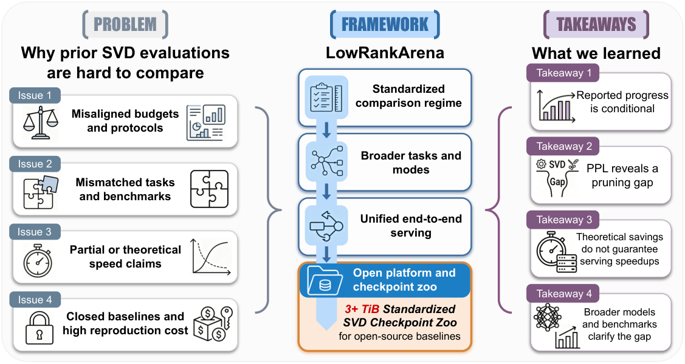

NeurIPS'26, ED Track, Poster
LowRankArena
LowRankArena compares SVD compression methods at matched budgets, measuring accuracy, memory use, and inference speed. It provides evaluation code and compressed model checkpoints.

Enlarge figurePaper Preprint Code PDF (preprint)
Full publication record
BibTeX
@inproceedings{shao2026lowrankarena,
author = {Shao, Zishan and
Zhang, Lixun and
Cui, Kangning and
Wu, Wenhao and
Kim, Jinhee and
Wang, Yixiao and
Jiang, Ting and
Ye, Hancheng and
Wang, Qinsi and
Yang, Fan and
Zhuo, Danyang and
Li, Hai and
Chen, Yiran},
title = {{LowRankArena}: A Standardized Evaluation Platform for {SVD}-Based {LLM} Compression},
booktitle = {The Fortieth Annual Conference on Neural Information Processing Systems},
year = {2026},
url = {https://neurips.cc/virtual/2026/poster/139091},
note = {Accepted conference paper, Evaluations and Datasets Track},
}